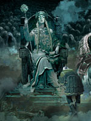

Хермод ("мужній"), у скандинавській міфології син Одіна і брат Бальдра, який виконував обов'язки вісника і посланця богів. Крім того, Хермод, мабуть, мав відношення до підземного царства, так як саме йому доручили відправитися до Хель просити про визволяння померлого Бальдра.
Хоробрий бог поскакав туди на коні Одіна, восьминогом Слейпнірі. Прибувши в чертоги володарки підземного світу, Хермод дізнався, що його брат встиг зайняти високе положення в царстві мертвих. Посланець богів повідав Хель про мету свого приїзду.
Володарка підземного царства погодилася відпустити Бальдра, якщо все істоти і речі на світі стануть оплакувати його, а також дозволила Хермод повернути в Асгард чудове кільце Одіна, яке той в пориві відчаю надів на палець мертвого сина.
Одного разу Хермод ледь не загинув по дорозі в Мідгард, землю людей. Стурбований прогнозами про своє майбутнє, Одін послав його в чужедальней краю до фінського мудреця Росстьофу за порадою. За допомогою чарівництва Хермод був врятований і поспішив повернутися в Асгард, щоб заспокоїти батька. У грецькій міфології йому в деякій мірі відповідає вісник богів Гермес.